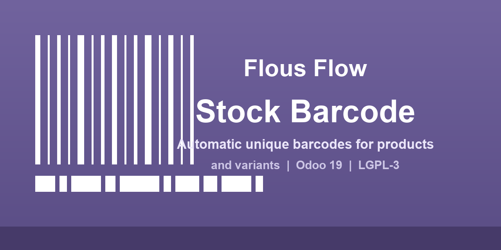
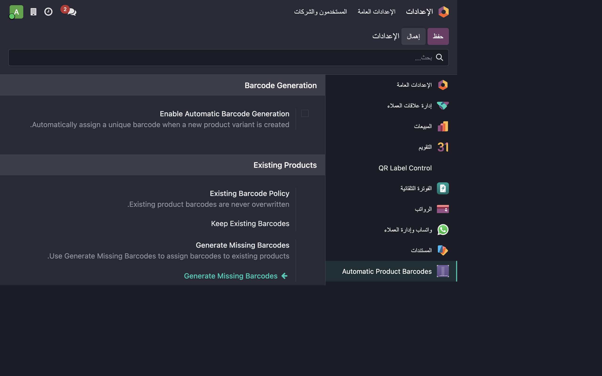
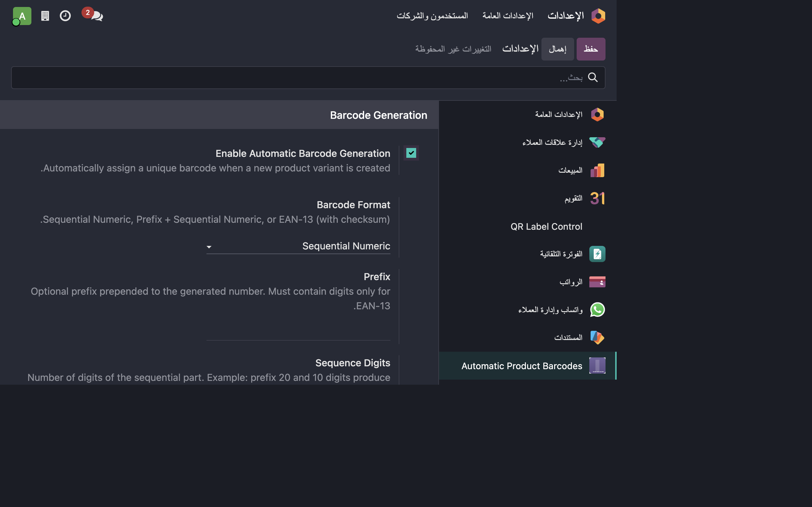
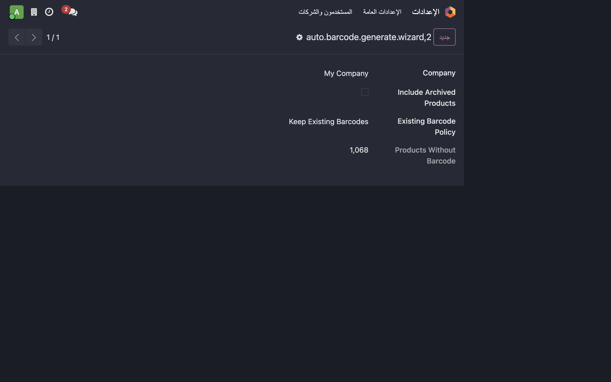
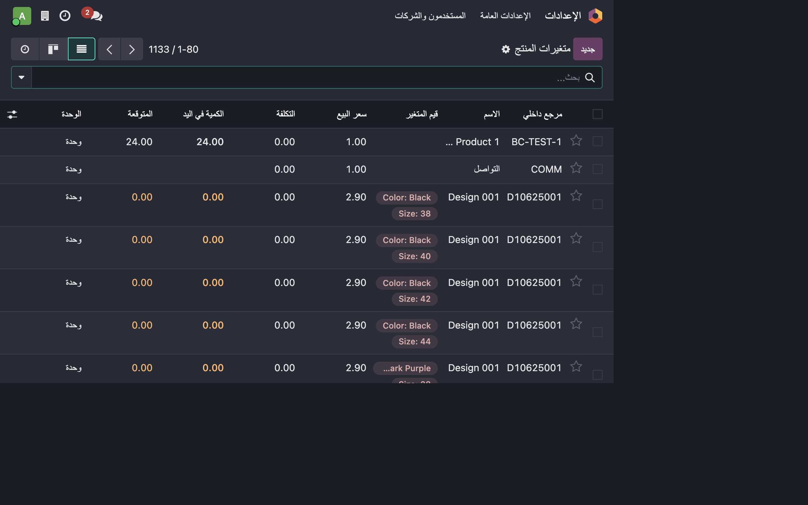

Odoo Community: Supported
Odoo Enterprise: Supported
Odoo.sh: Supported
Self-hosted Odoo: Supported
Odoo Online / SaaS: Not supported because this module contains Python code.
Q: Will the module overwrite my existing product barcodes?
A: No. Existing barcodes are preserved.
Q: Does it support product variants?
A: Yes. Each product variant receives its own barcode.
Q: Can it generate barcodes for products created before installation?
A: Yes. Use the Generate Missing Barcodes wizard.
Q: Does it work with Odoo Online SaaS?
A: No. Odoo Online does not support normal third-party Python addons.
Q: Are generated EAN-13 values automatically official GS1 GTIN numbers?
A: No. A company must use its valid GS1 allocation if official trade identification numbers are required.